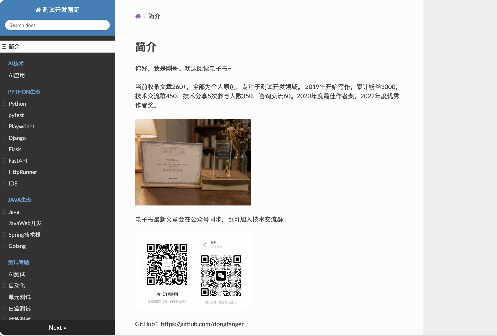
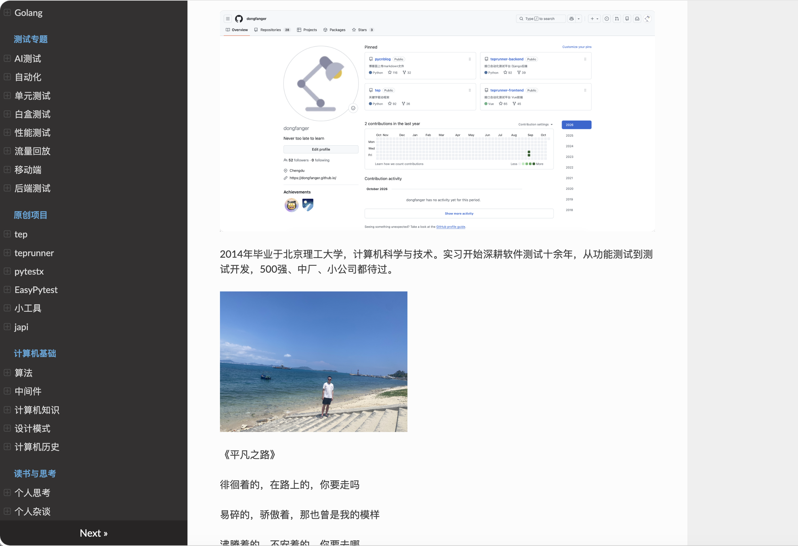
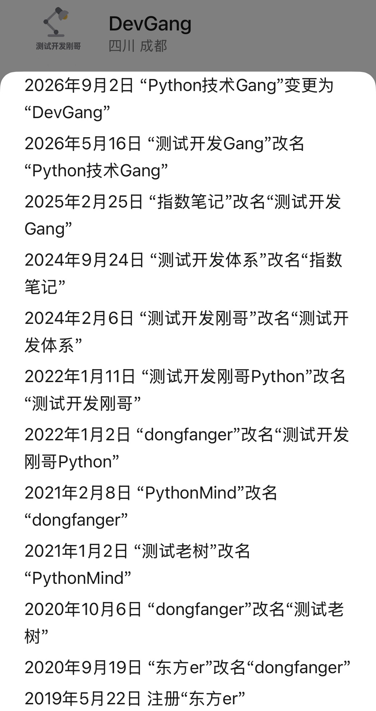

本书作者：测试开发刚哥，文章版权归个人所有，未经授权请勿转载。
电子书，简洁专注的阅读体验。对于技术文章来说，电脑端比手机端更适合阅读，尤其是代码。电子书的左侧目录能快速找到文章，虽然公众号也有文章分类功能，但是不能像目录树一样有“位置感”。电子书还能支持搜索。所以把个人网站做成了电子书。
使用AI，文章重新分类，网站技术重构。新版电子书的一级目录更加聚焦。网站技术从sphinx升级为mkdocs，主题仍然是readthedocs。解决的核心痛点是构建速度，从3分钟提升到了5秒。同时也省去了rst文件，全部使用markdown文件。


决定名字回归到测试开发刚哥。

{width=240}从这张图能看到7年来对于名字的纠结。写文章的高峰期是在2022年到2024年的两年，名字用的是测试开发刚哥。可惜的是内心不够坚定。可喜的是，仍然还有粉丝朋友关注着，在此表示感谢。等到2027改名次数解除限制，就改回来。
技术永不落幕。dev.to是最近入坑的技术网站。
短视频再火爆，AI再厉害，技术网站仍然有它的一席之地。Sylwia Laskowska分享了入驻dev.to一年的感想，其中有一句很有感触：“写文章一半是写给读者，一半是写给自己”。
基于电子书的知识结构写文章。3月8日公众号发布的《AI驱动的自动化测试框架（OpenClau实战版），看完少走1年弯路》是由AI写的。甚至里面的内容都有点失真。但是阅读量3755、赞26、分享403、涨粉75。写文章不是为了赚钱，事实上赚不了多少钱。与其追求流量，不如静下心来，提升写作水平。电子书是一张很好的个人名片。
电子书地址：dongfanger.github.io